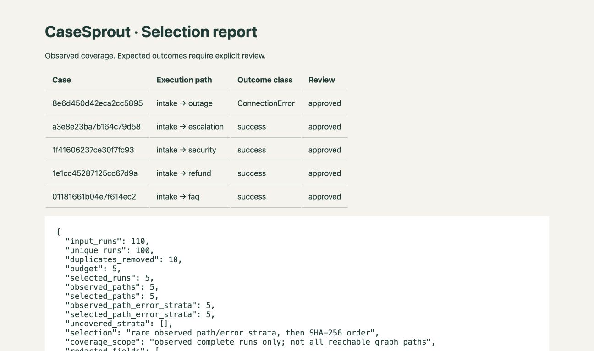
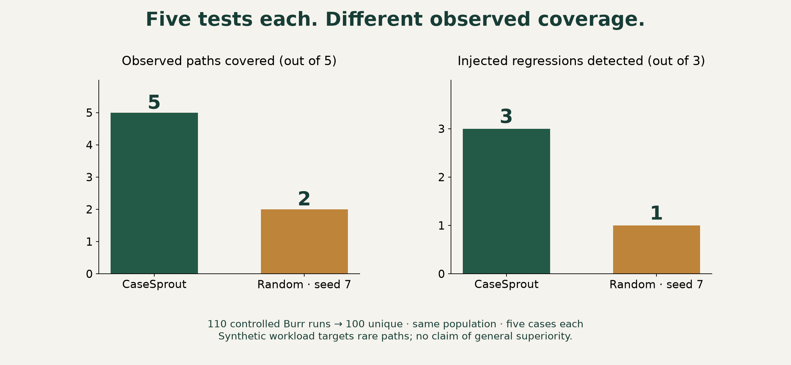
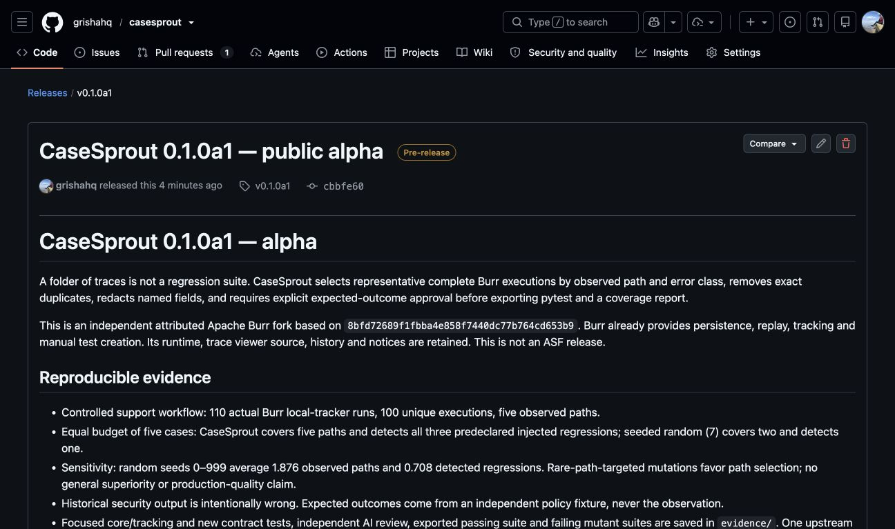

CaseSprout · English launch kit
Five story beats. Prepared copy and inspected assets. Scheduling and publication are recorded separately in scheduling.json; this review page does not claim social publication.
Verified public alpha release
1 · A folder full of traces does not protect the next release.
Audience: Agent engineers and QA developers with growing trace archives
Alt text: Conceptual paper-cut illustration: an archive of execution traces becomes five different seedlings beneath a human review card. Headline: A trace is not a test. This is an illustration, not a product screenshot.
LinkedIn
A folder full of traces does not protect the next release.
Consider a support agent that handles FAQs, refunds and account-security requests. It has plenty of history. But if the regression suite only exercises the common FAQ route, a change that automatically resets an account can slip through.
I built CaseSprout to make the gap between collecting executions and testing behavior easier to inspect.
The offline demo records 110 actual Burr executions, including an intentionally wrong historical security response. The important detail: that old response is NOT the expected answer. A separately specified policy requires human security review.
CaseSprout selects representative runs, removes exact duplicates, redacts named fields and stops before export until each selected case has an approved expected outcome and a stated basis. The developer still owns the acceptance policy.
This is an independent Apache Burr fork. Burr already has persistence, replay and manual test creation; the addition is batch selection and an explicit review/export workflow.
Run the support demo and compare the observed security response with its approved expectation: https://github.com/grishahq/casesprout
Alpha scope: controlled local JSON traces and deterministic adapters. More collected history does not automatically mean more useful regression coverage.
X thread
1/4 A folder full of agent traces does not protect the next release. If five sampled tests all follow the FAQ route, an account-security regression can remain invisible.
2/4 CaseSprout turns complete Burr run history into selected, reviewed pytest cases. The demo includes a deliberately WRONG historical security answer. It must not become the expected answer by default.
3/4 A separate policy requires human security review. Selection proposes cases; a developer supplies expected outcomes and their basis. Coverage and correctness remain different questions.
4/4 Try the offline support demo and inspect observed vs approved outcomes: https://github.com/grishahq/casesprout
Independent Apache Burr fork, public alpha. No model keys required.
Evidence: burr/casesprout/support.py, burr/casesprout/support_policy.json, evidence/demo/reviewed.json
Call to action: Run the support demo and inspect the security case's observed and approved outcomes.
2 · Copying history into assertions can preserve the bug.
Audience: QA/platform engineers designing agent regression suites
Alt text: Conceptual paper-cut garden with a busy path, quieter branches, a gardener placing green stepping stones and an amber lantern. Headline: Choose paths. Review outcomes. It illustrates selection and review, not measured coverage.
LinkedIn
Copying history into assertions can preserve the bug.
The straightforward trace-to-test approach is tempting: choose some runs, save their outputs, assert those outputs next time. It is also a way to turn an old failure into a permanent acceptance criterion.
CaseSprout keeps two decisions explicit.
First, which executions deserve limited review time? The alpha groups complete runs by action path and error class, takes representatives of rare observed groups, then fills the remaining budget deterministically. Exact duplicates do not consume the budget twice.
Second, what should those executions do? That answer comes from a developer-approved policy or specification, not the historical observation. Export requires the expectation, reviewer and basis for every selected case.
The tradeoff is deliberate. Path selection exposes structural variety, but can miss different semantic failures on the same path. Named-field redaction reduces some exposure, but does not scrub free text or guarantee that a redacted input will still replay correctly.
I would rather make those limits inspectable than hide them behind a coverage percentage.
Read the v1 contract and suggest a within-path failure it would miss: https://github.com/grishahq/casesprout/blob/main/casesprout_docs/CONTRACT.md
CaseSprout is an independent Apache Burr fork; manual trace-to-test creation already exists upstream. The new work is focused batch selection, review and export.
X thread
1/4 Trace -> saved output -> assertion sounds useful. It can also freeze a historical bug into your test oracle. The hard part is deciding what should have happened.
2/4 CaseSprout separates selection from approval. It favors rare observed path/error groups, deduplicates exact runs and uses deterministic tie-breaking. Expected outcomes are supplied separately.
3/4 Tradeoff: path variety is not semantic coverage. Two inputs can follow the same path and fail differently. Redacting a required input can also change replay behavior. Both limits are explicit.
4/4 Read the contract and tell me which within-path case you would add: https://github.com/grishahq/casesprout/blob/main/casesprout_docs/CONTRACT.md
Evidence: burr/casesprout/core.py, casesprout_docs/CONTRACT.md, tests/casesprout/test_contract.py
Call to action: Read the contract and suggest a within-path failure the current strategy would miss.
3 · Here is the complete loop: history, selection, review, executable tests.

Audience: Burr users and agent engineers who want a runnable example
Alt text: Actual browser screenshot of CaseSprout's generated selection report. Five approved cases cover intake to outage, escalation, security, refund and FAQ. The report records 110 input runs, 100 unique runs, 10 duplicates removed and a budget of five.
LinkedIn
Here is the complete loop: history, selection, review, executable tests.
CaseSprout's support demo runs the actual Burr state machine with local tracking. It creates FAQ, refund, security, escalation and controlled-backend-outage histories. There are no model calls or customer records.
The selector turns 110 runs into 100 unique executions and proposes five cases. The generated report shows their paths, outcome classes, review status and observed coverage. The attached image is a real screenshot of that report.
The demo then applies an independently written acceptance-policy fixture. The historical security output is intentionally wrong, so blindly copying it would fail the point of the exercise.
The approved export contains JSON fixtures, a small pytest module and an HTML report. Its adapter reruns the workflow with the selected redacted input and checks the approved output or exception class.
Five exported tests pass against the fixed implementation. Separate executions of the exported suite fail against each of the three predeclared regressions: automatic refund approval, automatic security reset and swallowed outage errors.
Start with the offline demo, then replace the adapter with a small deterministic part of your own app: https://github.com/grishahq/casesprout
The alpha supports one complete invocation per local JSON trace log. It does not reconstruct arbitrary application state or make nondeterministic answers exact.
X thread
1/4 Real demo, no model keys: Burr records 110 controlled support runs. CaseSprout finds 100 unique executions and selects five paths for review. The screenshot is the generated report, not a mockup.
2/4 The demo's acceptance policy is specified separately. An intentionally wrong historical security response is replaced by the required human-review outcome before export.
3/4 Export = JSON fixtures + pytest + an HTML selection report. Five cases pass on the fixed workflow. The same exported suite fails on each of three predeclared injected regressions.
4/4 Run it locally, then write a trusted adapter for your app: https://github.com/grishahq/casesprout
Alpha limit: complete local JSON runs and exact assertions. No automatic oracle.
Evidence: evidence/demo/suite/report.html, evidence/exported-suite.log, evidence/mutation-verification.json, scripts/casesprout_verify_mutants.py
Call to action: Run the demo, then replace the adapter with a small deterministic part of your own app.
4 · Five tests each. Different observed coverage.

Audience: Evaluation and QA engineers comparing sampling strategies
Alt text: Chart plotted from saved controlled-run results. With five cases each, CaseSprout covers five of five observed paths and detects three of three injected regressions; random sampling with seed seven covers two paths and detects one regression. The chart states that the synthetic workload targets rare paths and does not establish general superiority.
LinkedIn
Five tests each. Different observed coverage.
I compared CaseSprout's path/error selection with seeded random sampling on the same 100 unique controlled Burr executions. Each method got a budget of five cases. The protocol fixed the corpus, expected-outcome policy, three injected regressions and random seed before measurement.
CaseSprout covered 5 of 5 observed paths and detected 3 of 3 injected regressions. Random sampling with seed 7 covered 2 paths and detected 1 regression.
One random seed is not a general result. Across seeds 0-999, random samples averaged 1.876 observed paths and 0.708 detected regressions; one sample caught all three.
The most important caveat is in the experiment's design: the corpus is heavily weighted toward FAQs, while the mutations target rare refund, security and outage behavior. This deliberately favors a strategy that represents rare paths. It shows a concrete failure mode of a small random sample, not universal superiority.
The chart is plotted from saved results, and both the selected and random exported suites include reports whose coverage can be checked against their cases. All inputs are synthetic; all runs use the real deterministic Burr runtime.
Reproduce it, change the corpus mix or mutations, and compare: https://github.com/grishahq/casesprout/blob/main/casesprout_docs/METHODOLOGY.md
Observed path coverage is useful evidence. It is not proof of agent correctness.
X thread
1/4 Equal budget: five cases from the same 100 unique controlled Burr runs. CaseSprout covered 5 observed paths and caught 3 injected regressions. Seed-7 random covered 2 paths and caught 1.
2/4 To expose seed sensitivity, I also ran random seeds 0-999: mean 1.876 paths covered and 0.708 regressions detected. One sample caught all three. Raw results and methodology are saved.
3/4 The caveat matters: this synthetic corpus is FAQ-heavy and the predeclared mutations target rare paths. Path selection is favored by design. This is a reproducible example, not a general win-rate claim.
4/4 Change the mix or the mutants and rerun it: https://github.com/grishahq/casesprout/blob/main/casesprout_docs/METHODOLOGY.md
More observed coverage does not prove correctness.
Evidence: evidence/demo/results.json, casesprout_docs/METHODOLOGY.md, scripts/casesprout_chart.py, evidence/demo/random-suite/cases.json
Call to action: Reproduce the experiment, change the corpus mix or mutations, and compare the outcome.
5 · CaseSprout's public alpha is available, with a demo you can rerun.

Audience: Agent engineers assessing an open-source tool and potential contributors
Alt text: Actual browser screenshot of the public GitHub CaseSprout 0.1.0a1 prerelease: alpha title, tag and commit, upstream attribution and controlled experiment notes.
LinkedIn
CaseSprout's public alpha is available, with a demo you can rerun.
It is an independent, attributed Apache Burr fork focused on turning complete local execution histories into selected and reviewed regression cases. The Burr runtime, persistence, tracing and trace-viewer source remain. Burr's existing manual test creation is credited directly.
The release includes a wheel, source distribution, controlled evidence bundle and checksums. The installed demo needs Python, pytest and the tracking-client extra; no model API key is required. A clean installation from the downloaded release wheel runs the exported five-case suite.
Quickstart: create a fresh Python environment, download the wheel, install it with the tracking-client extra plus pytest, run `python -m burr.casesprout.demo /tmp/casesprout-demo`, then `python -m pytest /tmp/casesprout-demo/suite -q`. Exact install commands are in the release notes.
This is 0.1.0a1, an alpha. It supports complete single-invocation local JSON logs and trusted application adapters. The developer approves expected behavior; field redaction is not anonymization; coverage refers to observed runs. The viewer remains upstream source with its normal build process.
v0.2 targets a browser review interface, richer redaction configuration and CI comparison. A further format will follow actual user needs.
Download the release, run the demo and bring a sanitized minimal example of the trace shape you need next: https://github.com/grishahq/casesprout/releases/tag/v0.1.0a1
X thread
1/4 CaseSprout 0.1.0a1 is a public alpha: selected Burr traces -> reviewed expectations -> runnable pytest. Independent Apache Burr fork; runtime, history and attribution retained.
2/4 Release assets: wheel, source, controlled evidence and checksums. Fresh environment + tracking-client extra + pytest. No model keys. Download: https://github.com/grishahq/casesprout/releases/tag/v0.1.0a1
3/4 Run: python -m burr.casesprout.demo /tmp/casesprout-demo
Then: python -m pytest /tmp/casesprout-demo/suite -q
Five reviewed cases. Use a fresh output directory.
4/4 Alpha limits: complete local JSON runs, trusted adapters, exact assertions. Developers own expected outcomes. Bring a sanitized minimal trace example; v0.2 focuses on review and CI comparison.
Evidence: evidence/release-readback.json, evidence/release-verification.json, README.md, UPSTREAM.md
Call to action: Download the wheel, run the five-test demo, and open an issue with a sanitized minimal trace example.